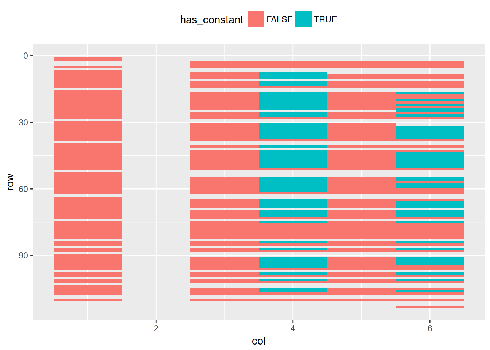

Detecting Spreadsheet Smells with xlex()
Duncan Garmonsway
2023-03-07
Source:vignettes/smells.Rmd
smells.RmdThe function xlex() separates formulas into tokens of
different types, and gives their depth within a nested formula. Its name
is a bad pun on ‘Excel’ and ‘lexer’. Try the online demo or
install the more experimental lexl package to run
demo_lexl() locally.
It is useful for detecting spreadsheet smells, which are poor practices in spreadsheet design, such as deep nests of functions, or embedding constants in formulas.
Inspecting the parse tree
Here’s an example with a simple formula MIN(3,MAX(2,A1))
(the = symbol at the beginning of the formula is implied,
because Excel doesn’t write it to the file).
## root
## ¦-- MIN function
## °-- ( fun_open
## ¦-- 3 number
## ¦-- , separator
## ¦-- MAX function
## °-- ( fun_open
## ¦-- 2 number
## ¦-- , separator
## °-- A1 ref
## °-- ) fun_close
## °-- ) fun_closeDetecting constants inside formulas
A smelly spreadsheet is distributed with the tidyxl
package. It comes from the famous Enron subpoena, made available by Felienne Hermans.
How does it look at a glance? Here’s a screenshot of part of one sheet, showing the formulas rather than the cell values. It’s a financial plan, using formulas to forecast the rest of the year, and the plan for the following year.
What we want to see is whether the formulas have any embedded
constants; ones that are hidden from our attention, but that are driving
the forecasts. While we could read each formula, one by one, it would be
a lot easier to visualise the ones containing constants. We can do this
with xlex() and a graph plotting library like
ggplot2.
The first step, after importing the spreadsheet, is to tokenize the
formulas, using xlsx(). Let’s tokenize one formula to see
what it looks like.
One formula
##
## Attaching package: 'dplyr'## The following objects are masked from 'package:stats':
##
## filter, lag## The following objects are masked from 'package:base':
##
## intersect, setdiff, setequal, union
library(tidyr)
library(purrr)
library(ggplot2)
# The original filename was "barry_tycholiz__848__2002 Plan Worksheet CC107322.xlsx"
sheet <- tidy_xlsx(system.file("extdata/enron-constants.xlsx",
package = "tidyxl"),
"Detail Breakdown")$data[[1]]## Warning: 'tidy_xlsx()' is deprecated.
## Use 'xlsx_cells()' or 'xlsx_formats()' instead.
sheet$formula[22]## [1] "(C8/7)*12-48000"
xlex(sheet$formula[22])## root
## °-- ( paren_open
## ¦-- C8 ref
## ¦-- / operator
## °-- 7 number
## ¦-- ) paren_close
## ¦-- * operator
## ¦-- 12 number
## ¦-- - operator
## °-- 48000 numberThe formula is (C8/7)*12-48000, and xlex()
separates it into its components. There are the parentheses, the
operators (division, multiplication, subtraction), a reference to
another cell (C8), and a few numeric constants: 7, 12, and
48000. What could they be?
The 7 is probably the 7th month, July, because of the column header “July YTD”. A year-to-date figure is being divided by 7, then multiplied by 12 to forecast the year-end figure. The 48000 is more mysterious – perhaps a future payment is expected.
Embedding these constants inside a formula is bad practice. Better practice would be to put the constants into their own cells, where they could be annotated with their meaning, and perhaps even named. Then formulas could refer to them, by name, e.g.
(Compensation/MonthsToDate)*12Months-FuturePaymentsMany formulas
The xlex() function isn’t vectorized (because it returns
a data frame), so we map it over each of the formulas to create a ‘nest’
column of individual data frames.
tokens <-
sheet %>%
filter(!is.na(formula)) %>%
select(row, col, formula) %>%
mutate(tokens = map(formula, xlex)) %>%
select(-formula)
tokens## # A tibble: 154 × 3
## row col tokens
## <int> <int> <list>
## 1 8 4 <xlex [9 × 3]>
## 2 9 4 <xlex [7 × 3]>
## 3 10 4 <xlex [7 × 3]>
## 4 12 4 <xlex [7 × 3]>
## 5 13 4 <xlex [7 × 3]>
## 6 14 3 <xlex [4 × 3]>
## 7 14 4 <xlex [4 × 3]>
## 8 14 5 <xlex [4 × 3]>
## 9 14 6 <xlex [4 × 3]>
## 10 17 4 <xlex [7 × 3]>
## # … with 144 more rowsThen we can unnest the data frames and filter for tokens that are constants, to find out which cells have constants in their formulas.
constants <-
tokens %>%
unnest(tokens) %>%
filter(type %in% c("error", "bool", "number", "text"))
constants## # A tibble: 201 × 5
## row col level type token
## <int> <int> <int> <chr> <chr>
## 1 8 4 1 number 7
## 2 8 4 0 number 12
## 3 8 4 0 number 48000
## 4 9 4 1 number 7
## 5 9 4 0 number 12
## 6 10 4 1 number 7
## 7 10 4 0 number 12
## 8 12 4 1 number 7
## 9 12 4 0 number 12
## 10 13 4 1 number 7
## # … with 191 more rowsWhich constants are most common? Unsurprisingly, 12 and 7 are almost equally abundant, but there are also lots of 6s and 9s – two- and three-quarterly figures? Then there are some 150000s and the familiar 48000s, followed by some fractions that look like percentages, and then several one-offs.
## # A tibble: 24 × 2
## token n
## <chr> <int>
## 1 12 59
## 2 7 58
## 3 6 30
## 4 9 30
## 5 150000 4
## 6 48000 2
## 7 0.05 1
## 8 0.1 1
## 9 0.35 1
## 10 0.5 1
## 11 1.05 1
## 12 10 1
## 13 10000 1
## 14 12000 1
## 15 13000 1
## 16 15000 1
## 17 2000 1
## 18 25000 1
## 19 5000 1
## 20 5320 1
## 21 7314 1
## 22 7800 1
## 23 866 1
## 24 95000 1Visualising constants
A final step is to visualize the spreadsheet, highlighting cells that
hide constants in their formulas. We already have a data frame of cells
with constants, so we join it back to the full dataset, and pass the
result into ggplot.
This time there doesn’t seem to be any particular pattern, which is perhaps suspicious in itself.
has_constants <-
constants %>%
distinct(row, col) %>%
mutate(has_constant = TRUE) %>%
right_join(sheet, by = c("row", "col")) %>%
filter(!is_blank) %>%
select(row, col, has_constant) %>%
replace_na(list(has_constant = FALSE))
has_constants## # A tibble: 412 × 3
## row col has_constant
## <int> <int> <lgl>
## 1 8 4 TRUE
## 2 9 4 TRUE
## 3 10 4 TRUE
## 4 12 4 TRUE
## 5 13 4 TRUE
## 6 17 4 TRUE
## 7 17 6 TRUE
## 8 18 4 TRUE
## 9 19 4 TRUE
## 10 20 4 TRUE
## # … with 402 more rows
has_constants %>%
# filter(row <= 28) %>%
ggplot(aes(col, row, fill = has_constant)) +
geom_tile() +
scale_y_reverse() +
theme(legend.position = "top")
Detecting deeply nested formulas
Using the same techniques as for detecting constants, we map
xlex() over the formulas in a spreadsheet, unnest the
result, and filter for tokens with particular properties. In this case,
we are interested in the level of each token, which tells
how deeply a token is nested in other functions and expressions.
This time, we use another spreadsheet from the Enron corpus. First, an illustration. Notice that inside the first function, the level increases to 1. Inside the second function, the level increases to 2.
xlex("MAX(3,MIN(2,4))")## root
## ¦-- MAX function
## °-- ( fun_open
## ¦-- 3 number
## ¦-- , separator
## ¦-- MIN function
## °-- ( fun_open
## ¦-- 2 number
## ¦-- , separator
## °-- 4 number
## °-- ) fun_close
## °-- ) fun_closeNow let’s apply the same test to all the formulas in a sheet. The deepest level of nesting turns out to be 7, and is seen in all the cells in row 171.
# The original filename was "albert_meyers__1__1-25act.xlsx"
sheet <- tidy_xlsx(system.file("extdata/enron-nested.xlsx",
package = "tidyxl"),
"Preschedule")$data[[1]]## Warning: 'tidy_xlsx()' is deprecated.
## Use 'xlsx_cells()' or 'xlsx_formats()' instead.
deepest <-
sheet %>%
filter(!is.na(formula)) %>%
mutate(tokens = map(formula, xlex)) %>%
select(row, col, tokens) %>%
unnest(tokens) %>%
filter(level == max(level)) %>%
distinct(row, col, level)
deepest## # A tibble: 48 × 3
## row col level
## <int> <int> <int>
## 1 171 2 7
## 2 171 3 7
## 3 171 4 7
## 4 171 5 7
## 5 171 6 7
## 6 171 7 7
## 7 171 8 7
## 8 171 9 7
## 9 171 10 7
## 10 171 11 7
## # … with 38 more rowsDo you wonder what those formulas look like?
## [1] "((IF((103-B$89)=103,0,(103-B$89)))+(IF((200-B$95)=200,0,(200-B$95)))+(IF((196-B$98)=196,0,(196-B$98)))+(IF((200-B$101)=200,0,(200-B$101)))+(IF((70-B$104)=70,0,(MIN(40,(70-B$104))))+(IF((78-B$109)=78,0,(MIN(50,(78-B$109)))))+(IF((103-B$114)=103,0,(MIN(66,(103-B$114)))))+(IF((195-B$119-B$124-B$129-B$134-B$139)=195,0,(MIN(70,(195-B$119-B$124-B$129-B$134-B$139)))))+(IF((64-B$144)=64,0,(MIN(50,(64-B$144)))))+(IF((48-B$149)=48,0,(MIN(20,(48-B$149)))))+(IF((44-B$154)=44,0,(MIN(20,(44-B$154)))))+(IF((130-B$159)=130,0,(MIN(20,(130-B$159)))))))"